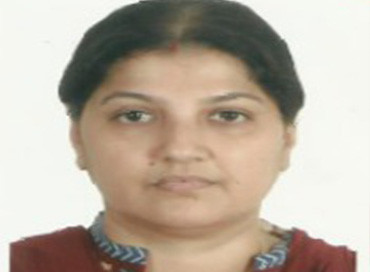

Our Vision and Mission:
NANAK is a national organization based in 8 states of India which has been set up with a vision to harness the full potential of individuals and institutions through knowledge creation and dissemination with the goal of empowering the disadvantaged.
While the primary movers of this organization are our rural communities at the grassroots in Bihar, and the urban poor of West Bengal, the promoters, advisors and members of NANAK are a set of individuals who come with years of competence, passion and commitment to bring about positive change in communities through a participatory approach.
Our Patrons and Advisors:
Mr. Amod K Kanth

Amod K. Kant is a social activist, and former bureaucrat who is best known as the founder of the NGO Prayas. He is known for raising his voice about issues surrounding children and the weaker sections of society in India and is also known for his contributions to various government and private institutions in these fields.
Dr. Pam Rajput
Pam Rajput is the founder Director of the Centre for Women's Studies & Development and was the Head of the Department of Political Science at Panjab University. She is an internationally renowned activist who has been engaged in the women's movement since the mid-70s. A recipient of many academic fellowships, and a member of several expert committees and bodies. Currently she is the Chairperson of The High Level Committee on Status of Women constituted by the Government of India.
Dr. Bindeshwar Pathak
Mr. Bindheshwar Pathak is the founder of Sulabh International, a social service organization which works to promote human rights, environmental sanitation, non-conventional sources of energy, waste management and social reforms through education. His work is considered one of the pioneer in social reforms especially in the field of sanitation and hygiene and he has received various national and international awards for his work in the social sector.
Mr. Sanjiv Kumar
Mr. Sanjiv Kumar is an educationist and the Secretary of the Takshila Education Society. He is also the Pro Vice Chairman of Delhi Public School Patna, Pune, Ludhiana and Coimbatore. He has pioneered a new model of integrated rural development in Narendrapur in Siwan, Bihar. Takshila Parivartan is spearheading initiatives for change in existing societal mores, attitudes, approach and skills. The primary focus of Parivartan is on vocational skill-building, empowerment of women, skilling of farmers and personality development of children and youth through multi pronged efforts and full participation of local communities.
Ms. Anuradha Goel
Ms. Anuradha Goel is the Chairperson of PHD Family Welfare Foundation and the President of St. Stephen's Hospital Patient's Welfare Society. She has been actively executing integrated family welfare projects with a special focus on socio-economic empowerment of women, mother and childcare. She has also worked on income generation training activities for rural and slum girls, advocacy and awareness generation on issues related to women and children.
Our Governing Board:
Mrs. Rashmi Singh
.
Rashmi Singh is a civil servant with a distinguished track record of more than two decades with major part of her work in the areas related to social inclusion, convergence and women empowerment. As the founder Director of Mission Convergence/ Samajik Suvidha Sangam in Delhi, and the Executive Director of National Resource Centre for Women, National Mission for Empowerment of Women, GOI, she has actively engaged across the country on a wide range of inter-sectoral issues, policies and programmatic interventions related to gender equality and social inclusion. She has been a catalyst to many effective GO-NGO partnership models on women empowerment ( such as the Stree Shakti-Suvidha Kendra or the Gender Resource Centres in Delhi and Poorna Shakti Kendras in other regions) through inter-sectoral convergence approach. Rashmi is an alumni from the Humphrey Institute of Public Affairs, University of Minnesota, USA and Lady Shri Ram College, Delhi University. She has a Post graduate Diploma from the I.H.S, Erasmus University, Netherlands. Rashmi is invited to various national and international forums as a motivational speaker and gender expert.
Amongst some of awards and recognitions she has received, notable are the Commonwealth Association for Public Administration & Management ( CAPAM) Innovation awards for Stree Shakti ( 2006) and Mission Convergence ( 2010), Leadership Award for Internationals from University of Minnesota, USA ( 2011), Women of Excellence Award from FICCI-FLO, Devi Ahilya Bai Holkar Award, Stree-Shakti award by the Ministry of WCD, Govt of India ( 2010), Dayawati Modi Stree Shakti Samman ( 2013). As President of NANAK, her motivation is to develop replicable integrated rural development models or 'Adarsh Gram' in backward regions especially in the states of Bihar, UP and West Bengal besides catalyzing collective actions around issues of national and international prominence.
Mrs. Indrani Palit

Indrani is the co- founder of Tender Touch, Kolkata (1998), an organization that is professed with the philosophy of providing a healing touch to the 'mind and soul' of the people who need it the most. Tender Touch especially caters to the orphans of Vivek Niketan, in the Bishnupur area of the 24 Paraganas (South) in West Bengal, helping them to live a life of dignity. As the Secretary of Network and Alliance for Non- profit Activities & Knowledge (NANAK), she is committed to work towards fulfilling its objectives to the best of her efforts namely towards making efforts for harnessing the full potential of individuals, and institutions with a focus on empowering the most vulnerable through knowledge creation, dissemination and capacity enhancement. She is particularly interested in child-rights and child development issues with a focus on out-of-school children so that they can be included within the mainstream education system.
Mr. Tanay Gupta
Tanay has done schooling from Mount St Mary in Delhi. While in school, he keenly participated in football, cricket, athletics and skits. He hails from Bihar from a family with rich tradition of art, culture and literature. Tanay has done automobile engineering from USA and after completing his education he came back to India to handle his family business related to automobiles. On his motivation for contributing towards social development through an active role in NANAK as a Treasurer, he states-"I believe that we all have a certain amount of responsibility towards the society and at a certain point in life we all need to give back to the society in whatever way we can. I would like to try and help those who are not as fortunate as us."
Dr. Deepali Garg
Dr Deepali has done MBBS from L.L.R.M. Medical college Meerut in 2003, and Post Graduation in Obstetrics & Gynecology from M.L.N .medical college, Allahabad in 2008. She is keen to use her professional knowledge and experience to serve the interest of the poor, especially women, adolescent girls and children. She is a good communicator who uses her skill in counseling women for family planning, spacing, nutrition, preventive health besides curative and palliative care and treatment. Dr Deepali is also interested in art, culture, music, reading books on social issues etc. her artistic expressions are manifested in some poetry she has written. Dr Deepali believes that by enhancing the self esteem of women lot of positive changes can be brought into their lives.
Mrs. Y Bharathi
Bharathi has done Bachelors in Home Science from Andhra University, West Godavari district. She has travelled to various districts in the state of Uttar Pradesh along with her husband who is from the Indian Forest Service, UP cadre. Bharathi's motivation for social work comes with her strong conviction that the education of women and girls should be the thrust of our developmental efforts. She also feels that once we educate the women, children are bound to get the right education and values both at home and through formal school system. She also feels that more awareness building measures are needed for improved health and nutrition of women and children for which she is happy to use her education degree in Home Science for making women aware about the value of good nutrition using locally available and affordable food products. Bharathi has also been an active member of SPICMACAY in Jhansi.
Mr. Sanjay Bansal
Mr Bansal has done Bachelor in Commerce from Jhumri Tillaiya in Bihar. He carried his family business in mica from the mica belt of Bihar to Gudur in the state of then Andhra Pradesh. Mr Bansal is a very spiritual person who has set up and manages an Ashram at Salasar in Rajasthan for the convenience of pilgrims who visit this famous pilgrimage site known for the temple of Lord Hanumana. Mr Bansal strongly believes that if we take a step forward towards a good cause there are many who are willing to join and turn the noble efforts into a social movement. He is also a trustee of Ram Swarup Sewa Sadan which runs the pilgrim centre at Salasar, Rajasthan. Mr Bansal has been an active supporter of various cultural and social casuses.
Other Founder Members
| Sr. No. | Name | Introduction |
|---|---|---|
| 1 | Dr. Abhay Singh | Gynecologist representing the state of Madhya Pradesh |
| 2 | Dr. Meera Singh | Head of Department , Home Science , Lucknow University. Lucknow, UP |
| 3 | Dr. Vartika Nanda | Media Expert and Social Thinker |
| 4 | Ms. Deepti Gulati | Social Worker & Secretary, Jhansi science Centre, Jhansi, UP |
| 5 | Ms. Parul Gupta | Entrepreneur & Social Worker representing UP and Uttrakhand |
| 6 | Ms. Bonnah Ghosh | Social Worker representing West Bengal |
| 7 | Ms. Usha Singh | Social Worker representing Uttar Pradesh |
| 8 | Mr. Mahendra Goel | Director, Assotech Pvt. Ltd. and Srajan Technologies |
| 9 | Ms. Indu Bansal | Social Worker representing Rajasthan |
| 10 | Ms. Kiran Singh | Educationist representing Bihar |
| 11 | Ms. Ritu Chagti | Entrepreneur & Hotelier representing Uttrakhand |
| 12 | Mr. Praveen Talwar | Educationist |
| 13 | Ms Sneha Palit | Youth President, NANAK |
| 14 | Mr. Chandrashekhar Prasad | Programme Coordinator, NANAK |